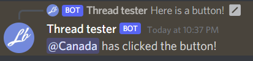

Responding to button clicks
Responding to buttons is pretty simple, there are a couple ways of doing it and we can cover both.
Method 1: Hooking the InteractionCreated Event
We can hook the ButtonExecuted event for button type interactions:
client.ButtonExecuted += MyButtonHandler;
Now, lets write our handler.
public async Task MyButtonHandler(SocketMessageComponent component)
{
// We can now check for our custom id
switch(component.Data.CustomId)
{
// Since we set our buttons custom id as 'custom-id', we can check for it like this:
case "custom-id":
// Lets respond by sending a message saying they clicked the button
await component.RespondAsync($"{component.User.Mention} has clicked the button!");
break;
}
}
Running it and clicking the button:
